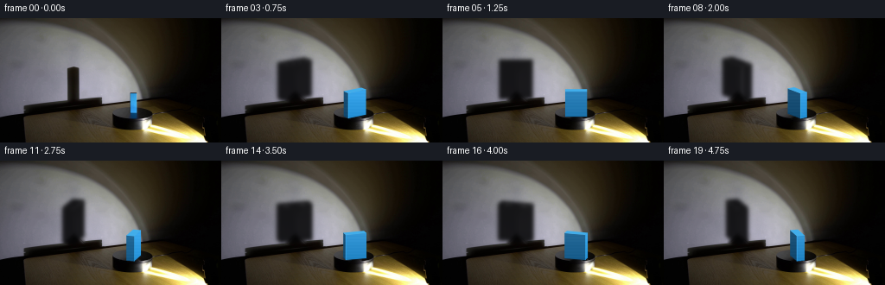
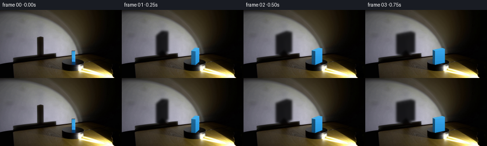

CODING AGENTS AS PIXEL WORLD MODELS
traex/GPT-5.6-Sol · 0073
点击播放 · 原生 RGB 像素
逐轮保存的候选
回放视频、检查图与代码变化。
每份候选均可单独播放。实际图片检查记录在下方工具轨迹中。
候选 01播放与检查图
点击播放 · 原生 RGB 像素


展开代码变化
--- 上一保存版本
+++ 本次保存版本
@@ -0,0 +1,219 @@
+from pathlib import Path
+
+import cv2
+import numpy as np
+from PIL import Image
+
+import artifact_io
+
+
+ROOT = Path(__file__).resolve().parent
+W, H = 256, 144
+SS = 4
+
+
+def soft_polygon(points, blur=0.0):
+ """Return an antialiased mask for a polygon in image coordinates."""
+ mask = np.zeros((H * SS, W * SS), np.uint8)
+ q = np.round(np.asarray(points) * SS).astype(np.int32)
+ cv2.fillConvexPoly(mask, q, 255, lineType=cv2.LINE_AA)
+ mask = cv2.resize(mask, (W, H), interpolation=cv2.INTER_AREA).astype(np.float32) / 255.0
+ if blur:
+ mask = cv2.GaussianBlur(mask, (0, 0), blur)
+ return np.clip(mask, 0.0, 1.0)
+
+
+def composite_color(image, color, alpha, texture=None):
+ a = alpha[..., None]
+ layer = np.empty_like(image, dtype=np.float32)
+ layer[:] = color
+ if texture is not None:
+ layer += texture[..., None]
+ image[:] = image * (1.0 - a) + np.clip(layer, 0, 255) * a
+
+
+def clean_background(first):
+ """Make a conservative clean plate beneath the moving block and shadow."""
+ bgr = cv2.cvtColor(first, cv2.COLOR_RGB2BGR)
+
+ # The original, narrow wall shadow occupies this area. Telea inpainting
+ # retains the very gradual illumination gradient of the plaster wall.
+ wall_mask = np.zeros((H, W), np.uint8)
+ cv2.rectangle(wall_mask, (73, 52), (98, 96), 255, -1)
+ wall_clean = cv2.inpaint(bgr, wall_mask, 7, cv2.INPAINT_TELEA)
+ # Feather the replacement so the clean plate has no rectangular seam.
+ feather = cv2.GaussianBlur(wall_mask.astype(np.float32) / 255.0, (0, 0), 2.2)[..., None]
+ bgr = (bgr * (1.0 - feather) + wall_clean * feather).astype(np.uint8)
+
+ # Remove the initial edge-on blue block. This area is covered again by
+ # the generated cuboid, but inpainting avoids blue slivers while it turns.
+ object_mask = np.zeros((H, W), np.uint8)
+ cv2.rectangle(object_mask, (147, 84), (162, 117), 255, -1)
+ obj_clean = cv2.inpaint(bgr, object_mask, 4, cv2.INPAINT_TELEA)
+ feather = cv2.GaussianBlur(object_mask.astype(np.float32) / 255.0, (0, 0), 0.8)[..., None]
+ bgr = (bgr * (1.0 - feather) + obj_clean * feather).astype(np.uint8)
+ return cv2.cvtColor(bgr, cv2.COLOR_BGR2RGB)
+
+
+def block_geometry(theta):
+ """Projected vertices and outward normals for the upright cuboid."""
+ length, depth = 25.0, 9.0
+ # Rectangle in turntable coordinates, counter-clockwise in x,z.
+ local = np.array([
+ [-length / 2, -depth / 2],
+ [ length / 2, -depth / 2],
+ [ length / 2, depth / 2],
+ [-length / 2, depth / 2],
+ ], np.float32)
+ c, s = np.cos(theta), np.sin(theta)
+ rot = np.array([[c, -s], [s, c]], np.float32)
+ world = local @ rot.T
+
+ center_x, center_y = 154.5, 112.55
+ perspective_flattening = 0.28
+ base = np.column_stack((center_x + world[:, 0],
+ center_y + perspective_flattening * world[:, 1]))
+ top = base.copy()
+ top[:, 1] -= 29.0
+
+ normals = []
+ for j in range(4):
+ edge = world[(j + 1) % 4] - world[j]
+ n = np.array([edge[1], -edge[0]], np.float32)
+ n /= max(np.linalg.norm(n), 1e-6)
+ normals.append(n)
+ return world, base, top, normals
+
+
+def object_silhouette(theta):
+ _, base, top, normals = block_geometry(theta)
+ masks = []
+ for j, normal in enumerate(normals):
+ if normal[1] > -0.001:
+ k = (j + 1) % 4
+ masks.append(soft_polygon([top[j], top[k], base[k], base[j]]))
+ masks.append(soft_polygon(top))
+ return np.maximum.reduce(masks), base, top, normals
+
+
+def add_rotating_platform_cues(image, frame_index):
+ """Subtle moving scuffs make the otherwise black turntable read as rotating."""
+ overlay = image.copy()
+ phase = 0.45 + 2.0 * np.pi * frame_index / 20.0 # increasing is clockwise in image space
+ for offset, strength in [(0.0, 10), (2.35, -7)]:
+ a = phase + offset
+ x = 154.0 + 21.0 * np.cos(a)
+ y = 118.4 + 5.2 * np.sin(a)
+ # A tiny tangential scratch, flattened with the turntable ellipse.
+ dx, dy = -2.1 * np.sin(a), 0.55 * np.cos(a)
+ p1 = (int(round(x - dx)), int(round(y - dy)))
+ p2 = (int(round(x + dx)), int(round(y + dy)))
+ col = tuple(int(np.clip(v + strength, 0, 255)) for v in image[int(round(y)), int(round(x))])
+ cv2.line(overlay, p1, p2, col, 1, cv2.LINE_AA)
+ # Keep these cues almost subliminal and restricted to the dark platter.
+ image[:] = image * 0.72 + overlay * 0.28
+
+
+def render_frame(clean, frame_index):
+ # In screen coordinates increasing angle is clockwise. The first-frame
+ # block is almost perfectly edge-on (theta = pi/2).
+ theta = np.pi / 2.0 + 2.0 * np.pi * frame_index / 20.0
+ image = clean.astype(np.float32).copy()
+ add_rotating_platform_cues(image, frame_index)
+
+ silhouette, base, top, normals = object_silhouette(theta)
+
+ # Project the actual current silhouette onto the wall. The scale and
+ # anchor are measured from the initial block and its large existing shadow.
+ affine = np.array([
+ [1.55, 0.0, 85.0 - 1.55 * 154.5],
+ [0.0, 1.45, 97.0 - 1.45 * 116.0],
+ ], np.float32)
+ wall_shadow = cv2.warpAffine(silhouette, affine, (W, H), flags=cv2.INTER_LINEAR,
+ borderMode=cv2.BORDER_CONSTANT, borderValue=0)
+ wall_shadow = cv2.GaussianBlur(wall_shadow, (0, 0), 2.15)
+ # Keep the cast shadow on the vertical wall and let it naturally disappear
+ # into the already-dark turntable at its foot.
+ wall_gate = np.ones((H, W), np.float32)
+ wall_gate[99:] = 0.0
+ wall_gate[96:99] = np.array([0.75, 0.42, 0.14], np.float32)[:, None]
+ wall_shadow *= wall_gate
+ # Warm-black translucent shadow: multiplying preserves wall texture.
+ opacity = np.clip(0.88 * wall_shadow, 0, 0.90)[..., None]
+ shadow_tint = np.array([5.0, 5.0, 6.0], np.float32)
+ image[:] = image * (1.0 - opacity) + shadow_tint * opacity
+
+ # A soft contact shadow locks the cuboid to the black rotating platform.
+ contact = np.zeros((H, W), np.float32)
+ cv2.ellipse(contact, (155, 115), (15, 3), 0, 0, 360, 1.0, -1, cv2.LINE_AA)
+ contact = cv2.GaussianBlur(contact, (0, 0), 1.5)[..., None]
+ image *= (1.0 - 0.32 * contact)
+
+ # Lamp direction in turntable x,z coordinates: the fixture is lower right.
+ light = np.array([0.84, 0.54], np.float32)
+ light /= np.linalg.norm(light)
+ base_blue = np.array([51.0, 160.0, 230.0], np.float32)
+ yy = np.arange(H, dtype=np.float32)[:, None]
+ fine_texture = 1.6 * np.sin(yy * 1.71 + 0.3) + 0.8 * np.sin(yy * 0.43)
+ fine_texture = np.broadcast_to(fine_texture, (H, W))
+
+ # Draw the two camera-facing walls of the block. Their changing widths,
+ # shading, and highlights make the direction of rotation unambiguous.
+ visible = []
+ for j, normal in enumerate(normals):
+ if normal[1] > 0.0005:
+ visible.append((float(normal[1]), j, normal))
+ # More oblique face first; polygons only share an edge, but this gives
+ # deterministic antialiasing at that edge.
+ visible.sort()
+ for _, j, normal in visible:
+ k = (j + 1) % 4
+ mask = soft_polygon([top[j], top[k], base[k], base[j]])
+ diffuse = max(0.0, float(np.dot(normal, light)))
+ intensity = 0.47 + 0.56 * diffuse
+ color = base_blue * intensity
+ # Cooler ambient light remains on the unlit side.
+ color += np.array([0.0, 3.0, 8.0], np.float32) * (1.0 - diffuse)
+ # Gentle vertical falloff, matching the low, right-hand spotlight.
+ vertical = np.clip(1.02 - 0.005 * (yy - 88.0), 0.86, 1.04)
+ texture = fine_texture + (vertical - 1.0) * float(np.mean(color))
+ composite_color(image, color, mask, texture)
+
+ # Fine edge glint on the lamp-facing vertical corner.
+ if normal[0] > 0.18:
+ edge = np.zeros((H * SS, W * SS), np.uint8)
+ p = np.round(np.array([top[k], base[k]]) * SS).astype(np.int32)
+ cv2.line(edge, tuple(p[0]), tuple(p[1]), 170, 2, cv2.LINE_AA)
+ edge = cv2.resize(edge, (W, H), interpolation=cv2.INTER_AREA).astype(np.float32) / 255.0
+ composite_color(image, np.clip(color * 1.16 + 8, 0, 255), edge)
+
+ # The top is a small, brighter rhombus; its motion gives strong 3-D cues.
+ top_mask = soft_polygon(top)
+ top_color = np.array([66.0, 174.0, 235.0], np.float32)
+ composite_color(image, top_color, top_mask, fine_texture * 0.45)
+ # Dark blue line where the object meets the platform.
+ near_j = int(np.argmax(base[:, 1]))
+ prev_j = (near_j - 1) % 4
+ next_j = (near_j + 1) % 4
+ line_layer = image.copy()
+ cv2.line(line_layer, tuple(np.round(base[prev_j]).astype(int)),
+ tuple(np.round(base[near_j]).astype(int)), (8, 47, 79), 1, cv2.LINE_AA)
+ cv2.line(line_layer, tuple(np.round(base[near_j]).astype(int)),
+ tuple(np.round(base[next_j]).astype(int)), (8, 47, 79), 1, cv2.LINE_AA)
+ image[:] = 0.72 * image + 0.28 * line_layer
+
+ return np.clip(np.rint(image), 0, 255).astype(np.uint8)
+
+
+def main():
+ first = np.asarray(Image.open(ROOT / "first_frame.png").convert("RGB"), dtype=np.uint8)
+ clean = clean_background(first)
+ frames = np.empty((20, H, W, 3), dtype=np.uint8)
+ frames[0] = first # generation contract: exact, byte-for-byte pixel values
+ for i in range(1, 20):
+ frames[i] = render_frame(clean, i)
+ artifact_io.save(frames, ROOT)
+
+
+if __name__ == "__main__":
+ main()
可观测工具轨迹
实际执行的命令与返回图片。
命令 1exit 0
/bin/bash -lc "cat GENERATION_RULES.md && printf '\\n---PROMPT---\\n' && cat prompt.txt"
命令 2exit 0
/bin/bash -lc "find . -maxdepth 2 -type f -printf '%p %s bytes\\n' | sort && python3 - <<'PY'
from PIL import Image
im=Image.open('first_frame.png')
print(im.mode, im.size)
PY"命令 3exit 0
/bin/bash -lc "python3 - <<'PY'
from PIL import Image
import numpy as np
im=np.array(Image.open('first_frame.png'))
# stats/grid 64x36 chars based luminance and dominant color
small=np.array(Image.fromarray(im).resize((64,36)))
chars=' .:-=+*#%@'
for row in small:
s=''
for r,g,b in row:
mx=max(r,g,b); mn=min(r,g,b); lum=.2126*r+.7152*g+.0722*b
if b>r*1.25 and b>g*1.15 and b>55: c='B'
elif r>g*1.25 and r>b*1.15 and r>70: c='R'
elif max(r,g,b)-min(r,g,b)<18: c=chars[min(9,int(lum/256*10))]
else: c=chars[min(9,int(lum/256*10))]
s+=c
print(s)
print('channel min max mean',[(im[...,i].min(),im[...,i].max(),im[...,i].mean()) for i in range(3)])
# list unique top colors coarse bins
q=(im//16).reshape(-1,3)
from collections import Counter
for k,n in Counter(map(tuple,q)).most_common(25):print(tuple(np.array(k)*16+8),n)
PY"命令 4exit 0
/bin/bash -lc "python3 - <<'PY'
import cv2, numpy as np
from PIL import Image
im=cv2.imread('first_frame.png'); hsv=cv2.cvtColor(im,cv2.COLOR_BGR2HSV)
for name,mask in [
('blue',(hsv[:,:,0]>90)&(hsv[:,:,0]<135)&(hsv[:,:,1]>60)&(hsv[:,:,2]>35)),
('red',(hsv[:,:,0]<10)&(hsv[:,:,1]>80)&(hsv[:,:,2]>60)),
('bright',(hsv[:,:,2]>200)),('dark',(hsv[:,:,2]<30)),
('sat',(hsv[:,:,1]>100)&(hsv[:,:,2]>40))]:
n, lab, stats, cent=cv2.connectedComponentsWithStats(mask.astype('uint8'))
print('\\n',name,'count',mask.sum())
for i in np.argsort(stats[1:,4])[::-1][:20]+1:
if stats[i,4]>=3: print(stats[i].tolist(),cent[i].round(1).tolist())
# pixel samples grid x step16 y step8 as rgb hex
rgb=np.array(Image.open('first_frame.png'))
print('\\nSamples:')
for y in range(0,144,8):
print(f'{y:3}', ' '.join('%02x%02x%02x'%tuple(rgb[y,x]) for x in range(0,256,16)))
PY"命令 5exit 0
/bin/bash -lc "python3 - <<'PY'
from PIL import Image
import numpy as np, cv2
im=np.array(Image.open('first_frame.png'))
# print crop 120:220 x 75:144 mapping color categories each 2x2
for y in range(74,144,2):
s=''
for x in range(110,256,2):
p=im[y:y+2,x:x+2].mean((0,1)); r,g,b=p; v=max(p); sat=v-min(p)
if b>r*1.35 and b>g*1.2 and b>55:c='B'
elif v<8:c=' '
elif v<20:c='.'
elif v<35:c=':'
elif v<55:c='-'
elif v<80:c='='
elif v<110:c='+'
elif v<145:c='*'
elif v<180:c='#'
elif v<220:c='%'
else:c='@'
s+=c
print(f'{y:3} {s}')
# exact blue rows runs
hsv=cv2.cvtColor(im,cv2.COLOR_RGB2HSV); m=(hsv[...,0]>90)&(hsv[...,0]<135)&(hsv[...,1]>50)&(hsv[...,2]>30)
print('blue rows')
for y in range(144):
xs=np.where(m[y])[0]
if len(xs): print(y,xs.min(),xs.max(),len(xs), np.mean(im[y,xs],0).astype(int))
PY"命令 6exit 0
/bin/bash -lc "python3 - <<'PY'
from PIL import Image
import numpy as np
im=np.array(Image.open('first_frame.png'))
for y in range(80,121):
print(y,end=' ')
for x in range(142,166):
r,g,b=map(int,im[y,x]);
# hue shorthand
if b>r*1.25 and b>g*1.15 and b>35:c='B'
elif max(r,g,b)<8:c=' '
elif max(r,g,b)<18:c='.'
elif max(r,g,b)<35:c=':'
elif max(r,g,b)<60:c='-'
elif max(r,g,b)<90:c='='
elif max(r,g,b)<130:c='+'
elif max(r,g,b)<170:c='*'
elif max(r,g,b)<210:c='#'
else:c='%'
print(c,end='')
print(' ', ['%02x%02x%02x'%tuple(im[y,x]) for x in range(147,162)])
PY"命令 7exit 0
/bin/bash -lc "python3 - <<'PY'
from PIL import Image
import numpy as np
im=np.array(Image.open('first_frame.png')).astype(float); L=im.mean(2)
for y in range(48,119,4):
print(f'{y:3}',end=' ')
for x in range(50,171,4):
print(f'{int(L[y:y+4,x:x+4].mean()):3}',end=' ')
print()
PY"命令 8exit 0
/bin/bash -lc "cat artifact_io.py && python3 - <<'PY'
import cv2, numpy as np
im=cv2.imread('first_frame.png')
g=cv2.cvtColor(im,cv2.COLOR_BGR2GRAY)
# Sobel summed edge peaks per rows/cols
sx=np.abs(cv2.Sobel(g,cv2.CV_32F,1,0)); sy=np.abs(cv2.Sobel(g,cv2.CV_32F,0,1))
print('x peaks',sorted(enumerate(sx.sum(0)),key=lambda z:z[1],reverse=True)[:30])
print('y peaks',sorted(enumerate(sy.sum(1)),key=lambda z:z[1],reverse=True)[:30])
# grayscale mean ranges rows 90+, every 8 cols
for y in range(88,144,4):
vals=[]
for x in range(0,256,8): vals.append(int(g[y:y+4,x:x+8].mean()))
print(y,' '.join(f'{v:3}' for v in vals))
PY"命令 9exit 0
/bin/bash -lc "python3 generate.py && python3 - <<'PY'
import numpy as np
from PIL import Image
z=np.load('pixels.npz')['pixels']
print(z.shape,z.dtype)
a=np.array(Image.open('first_frame.png')); b=np.array(Image.open('frames/00.png'))
print('first identical',np.array_equal(a,b),'max',np.abs(a.astype(int)-b.astype(int)).max())
for i in range(20):
im=np.array(Image.open(f'frames/{i:02}.png'))
if i: print(i, np.mean(np.abs(im.astype(float)-prev)), np.count_nonzero(np.any(im"'!=prev,2)), end='"'; ')
prev=im
print()
PY"命令 10exit 0
/bin/bash -lc "python3 - <<'PY'
from PIL import Image
import numpy as np, cv2
for fi in [0,1,2,3,4,5,8,10,12,15,18,19]:
im=np.array(Image.open(f'frames/{fi:02}.png'))
print('\\nFRAME',fi)
# crop x55:180, y40:124 scale 3x2, classify shadow as dark vs blue etc
for y in range(44,124,3):
s=''
for x in range(55,181,3):
p=im[y:y+3,x:x+3].mean((0,1));r,g,b=p;v=max(p)
if b>r*1.3 and b>g*1.14 and b>40:c='B'
elif v<12:c=' '
elif v<28:c='.'
elif v<50:c=':'
elif v<80:c='-'
elif v<110:c='='
elif v<145:c='+'
elif v<180:c='*'
elif v<220:c='#'
else:c='@'
s+=c
print(s)
PY"保存候选 1 份；完成命令 10 次；可验证图片返回 0 张。原始 API 响应与完整日志保留在本地。